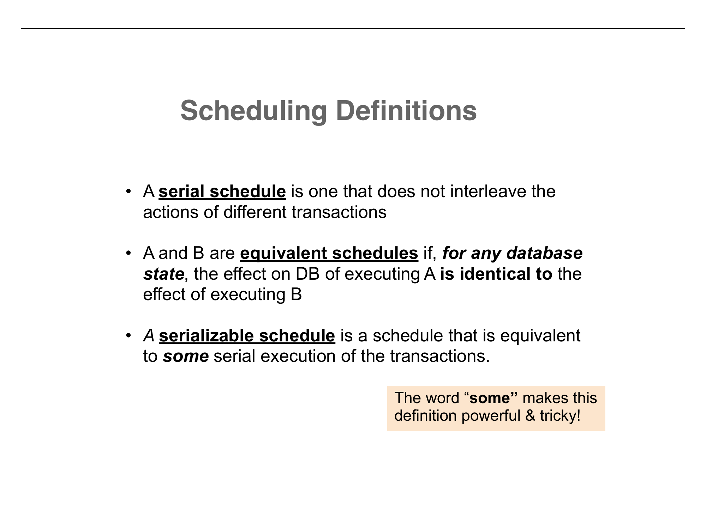
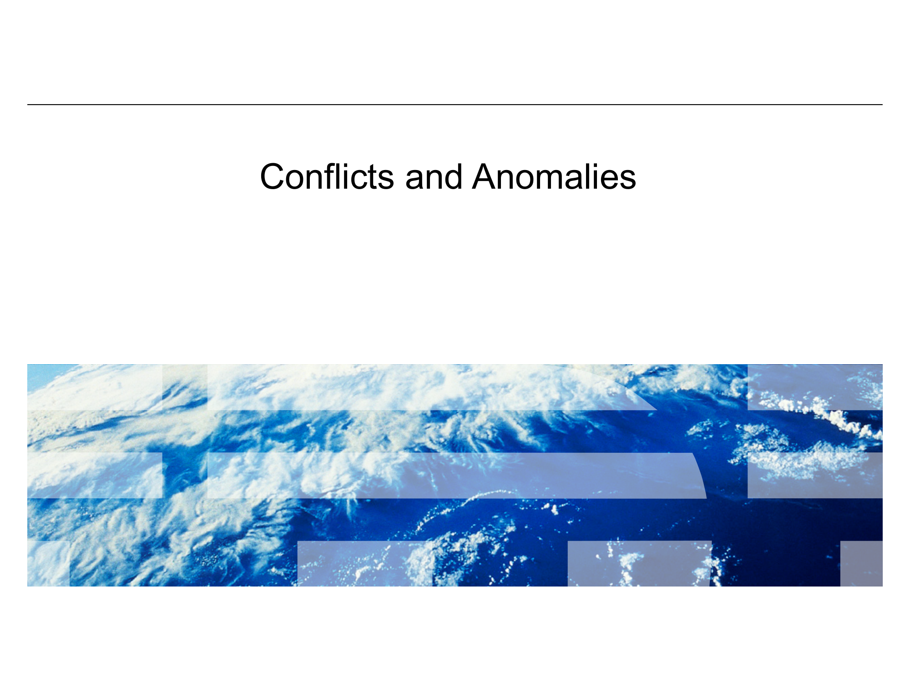
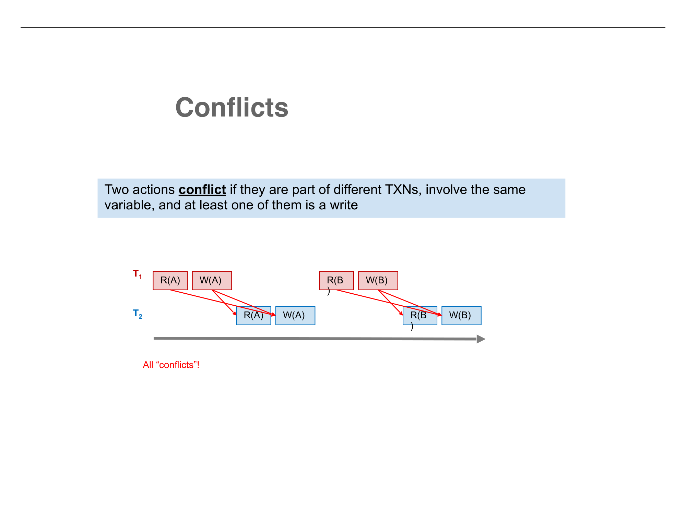
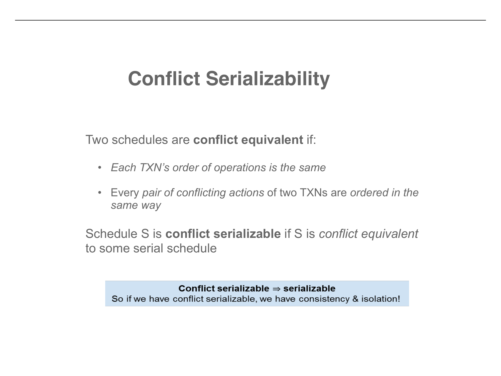

From schedule catalogs to conflict graphs — a systematic approach to safe interleaving
Continuing from Part 8, the lecture completes the analysis of Schedule B (the "bad" interleaving). We already showed that Schedule B produces A = $159, B = $112 — different from the serial order T1→T2 which gives A = $159, B = $106. But what about the other serial order?
Starting: A = $50, B = $200
T2 runs: A = $50 * 1.06 = $53, B = $200 * 1.06 = $212
T1 runs: A = $53 + $100 = $153, B = $212 - $100 = $112
Schedule B produces A = $159, B = $112. The serial order T2→T1 gives A = $153, B = $112. Different! Schedule B does not match T1→T2 or T2→T1. Since it matches no serial order, it is not serializable.
The lecture now formalizes the terminology we have been using informally:
A schedule is serializable if it matches any serial order. With N transactions, there are N! possible serial orderings. The schedule only needs to match one of them to be correct. This makes serializability a surprisingly permissive condition — many interleaved schedules turn out to be serializable, even though they look nothing like serial execution.
The lecture presents all possible schedules of T1 and T2 (with two operations each) to build intuition:
| Schedule | Type | Classification |
|---|---|---|
| S1: T1(A+=100), T1(B-=100), T2(A*=1.06), T2(B*=1.06) | Serial (T1→T2) | Always correct |
| S2: T2(A*=1.06), T2(B*=1.06), T1(A+=100), T1(B-=100) | Serial (T2→T1) | Always correct |
| S3: T1(A+=100), T2(A*=1.06), T1(B-=100), T2(B*=1.06) | Interleaved | Serializable (equivalent to S1) |
| S4: T2(A*=1.06), T1(A+=100), T2(B*=1.06), T1(B-=100) | Interleaved | Serializable (equivalent to S2) |
| S5: T2(A*=1.06), T1(A+=100), T1(B-=100), T2(B*=1.06) | Interleaved | NOT serializable |
| S6: T1(A+=100), T2(A*=1.06), T2(B*=1.06), T1(B-=100) | Interleaved | NOT serializable |
S1 and S3 are equivalent (same result for all initial states). S2 and S4 are equivalent. S5 and S6 are the bad schedules — they match neither S1 nor S2. Note that the serializable interleaved schedules (S3, S4) are just as correct as the serial schedules (S1, S2), despite being interleaved.
The lecture references the 2022 Ticketmaster/Taylor Swift Eras Tour ticket sale disaster as a real-world example of what happens when concurrent transactions go wrong at scale. Millions of fans tried to purchase tickets simultaneously, overwhelming the system's ability to manage concurrent access to a limited inventory.
To reason about schedules systematically, we need a more abstract model. Each action in a transaction reads a value and then writes one back. We model transactions as sequences of R(X) and W(X) operations, where X is a data item.
T1: R(A), W(A), R(B), W(B)
T2: R(A), W(A), R(B), W(B)
T1: R(A), W(A), R(B), W(B)
T2: R(A), W(A), R(B), W(B)
Having transactions occur concurrently means interleaving their component R/W actions. Each particular order of interleaving is called a schedule. The key constraint: the order of operations within each transaction must be preserved.
This gives three types of conflicts:
| Type | Operations | Why It Matters |
|---|---|---|
| Read-Write (RW) | Ti reads X, Tj writes X | Swapping the order changes what Ti reads |
| Write-Read (WR) | Ti writes X, Tj reads X | Swapping the order changes what Tj reads |
| Write-Write (WW) | Ti writes X, Tj writes X | Swapping the order changes which write "wins" |
Two reads on the same variable from different transactions do not conflict. Reads do not change data, so the order in which they occur has no effect on the outcome. You can freely swap two reads without changing anything.

This is a crucial distinction that the lecture emphasizes:
Are present in both "good" and "bad" schedules. Conflicts are a property of the transactions themselves — they exist regardless of how the transactions are scheduled. Any pair of transactions that access the same data with at least one write will have conflicts.
Only occur in "bad" schedules where the specific interleaving causes the conflicts to produce incorrect results. The goal is to avoid anomalies while interleaving transactions with conflicts — do not create schedules where isolation and/or consistency is broken.

Now we arrive at the formal tool for distinguishing good schedules from bad ones without computing actual values:
Conflict serializable ⇒ serializable. So if we have conflict serializability, we have consistency and isolation. This gives us an operative, checkable definition of "good" vs. "bad" schedules. In the "bad" schedule, the order of conflicting actions is different from any serial schedule — that is what makes it bad.
Consider the serial schedule T1→T2. All conflicts point from T1 to T2 (T1's operations always come before T2's conflicting operations). Now look at two interleaved schedules:
All conflicting pairs are ordered the same way as in the serial schedule T1→T2: T1's conflicting operations always precede T2's. The schedule is conflict equivalent to T1→T2.
Result: Conflict serializable. Safe to execute.
Some conflicting pairs have T1 before T2, but others have T2 before T1. The conflict ordering does not match any serial schedule.
Result: NOT conflict serializable. Creates data anomalies.

Rather than comparing conflict orderings by hand, we can use a graph to determine serializability mechanically:
For the good interleaved schedule, all conflict edges point from T1 to T2: the conflict graph is T1 → T2. This is acyclic — it is a DAG. The schedule is conflict serializable, equivalent to serial order T1, T2.
For the bad interleaved schedule, some conflicts point T1 → T2 and others point T2 → T1. The conflict graph has a cycle: T1 → T2 → T1. This means "T1 must come before T2 AND T2 must come before T1" — a contradiction. The schedule is NOT conflict serializable.
T1 → T2 (no cycle). Equivalent serial order exists: T1 then T2. Schedule is conflict serializable.
T1 → T2 → T1 (cycle!). No serial order can satisfy both constraints. Schedule is NOT conflict serializable.
